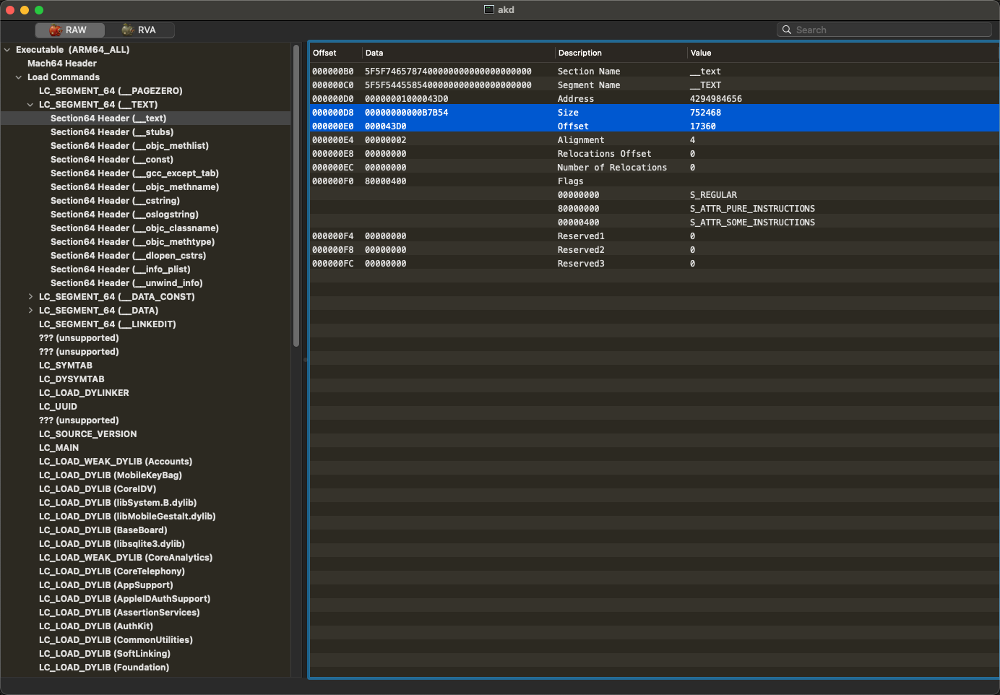
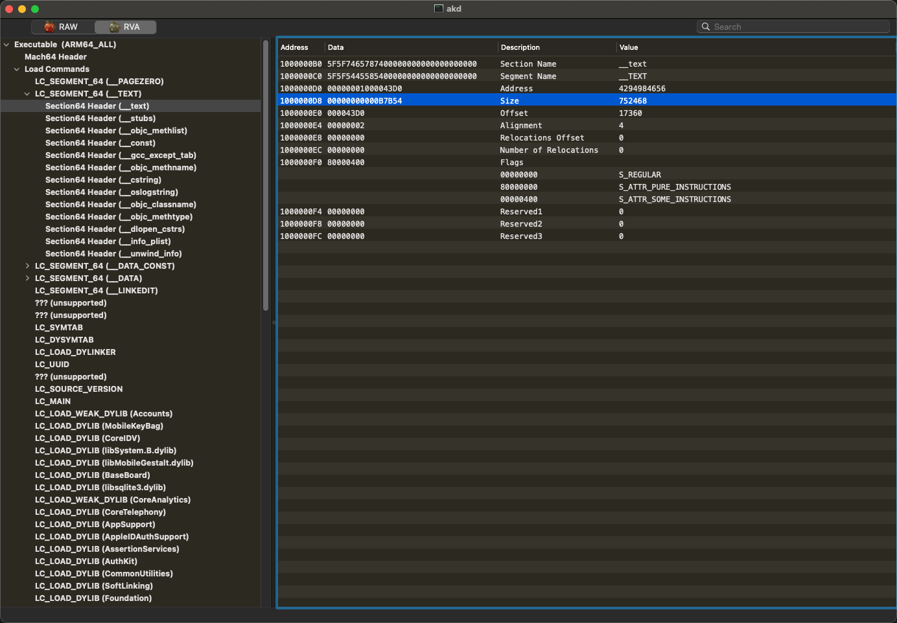
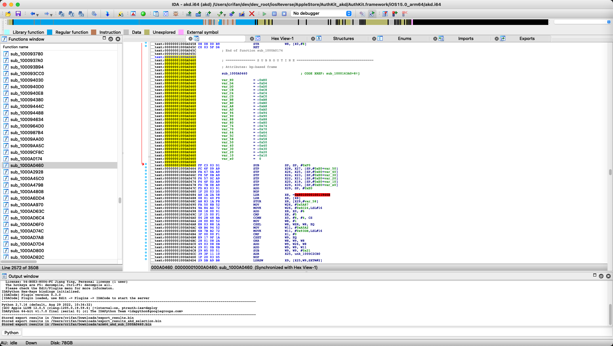

虚拟地址
关于虚拟地址
- Mach-O中相关定义：
segment段和section节中的部分定义segment_command_64中有对应字段vmaddrVM Address=虚拟内存地址- 当程序被加载到内存中后，对应的（虚拟）内存地址
- 注：现代CPU都支持（映射后的）虚拟内存
- 当程序被加载到内存中后，对应的（虚拟）内存地址
vmsize- 虚拟内存中的程序大小
- 目前所见过的所有情况中，此值都是和文件大小一样
- 虚拟内存中的程序大小
section_64addr- 虚拟内存地址
- 不是我们从硬盘中读取的偏移量地址
- 虚拟内存地址
size- 大小，单位是字节
- 适用于虚拟内存地址和文件偏移量
- 大小，单位是字节
offset- （磁盘中的）文件内的偏移量
- Mach-O中相关定义：
一般来说：
- 有2个偏移量=地址
虚拟内存=vm文件=file
- 对应分别常被简称为
vmofffileoff
- 举例
- 最开始的起始地址
fileoff= 0x0vmoff= 0x100000000- 程序常被映射到虚拟内存地址0x100000000
- 最开始的起始地址
- 有2个偏移量=地址
- 进一步说：
- 其实有3个常见地址相关名词
VA=Virtual Address=虚拟地址- ==
VM Address=虚拟内存地址
- ==
RVA=Relative Virtual Address=相对的虚拟地址- 相对于谁：
ImageBase=二进制镜像文件的基地址
- 相对于谁：
File Offset=文件内偏移量file_off= (address-seg.address) +seg.offset
- 举例
Virtual Address = 0x00401000ImageBase = 0x00400000RVA = 0x00001000
- MachOView中能看到：
- 2种显示模式
RAW=原始地址=虚拟地址RVA=相对虚拟地址 = 类似于VA的概念- 比如：
baseAddress=基地址=VM Address=虚拟内存基地址：0x100000000File Offset地址：0xA0460-> 变成了RVA地址：0x1000A0460
- 比如：
- 举例
akdRAW- 
RVA- 
- 2种显示模式
- IDA中的地址是：加了基地址后的
RVA地址- 
- 其实有3个常见地址相关名词